P3 Dokumentär
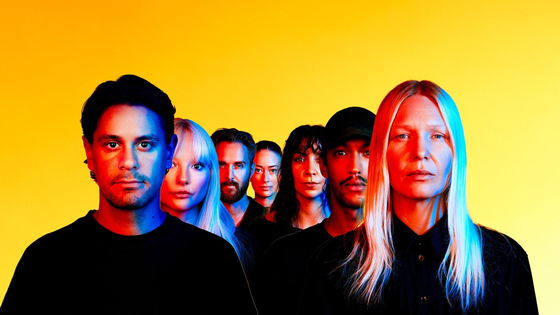
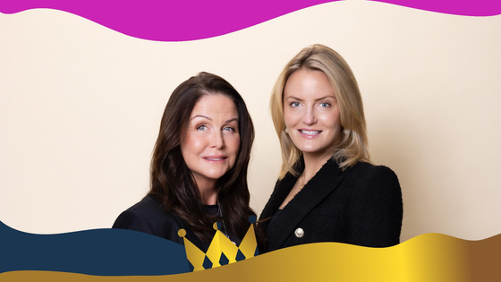
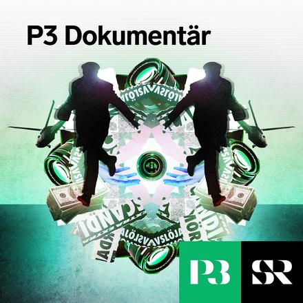
Sveriges största podd om vår tids mest spännande och viktiga händelser.
P3 Dokumentär



Sveriges största podd om vår tids mest spännande och viktiga händelser.
Poddar som liknar det du lyssnat på
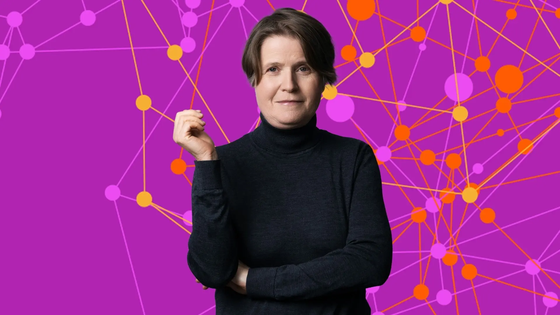
I HJÄRNAN PÅ LOUISE EPSTEIN
Den gåtfulla dygnsrytmen - allt du vill veta
Hur kan morgonmänniskor och kvällsmänniskor samexistera?
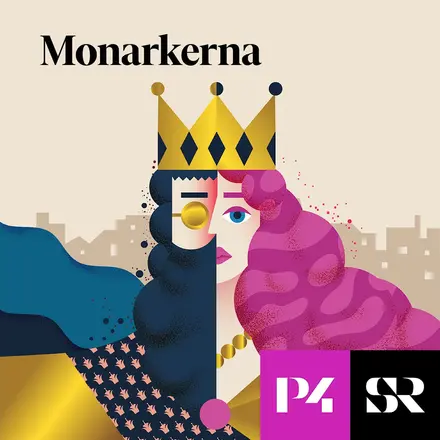
Monarkerna
Samhälle och kultur
Med Titti Schultz ihop med de kungliga experterna Ebba Kleberg von Sydow och Sara Ericsson. En podd om det svenska kungahuset och europeisk monarki.

P3 HISTORIA
Nyköpings gästabud, del 1 – Generationer av brödrasvek
Del 1 av 3
En långdragen fejd där maktkamp, krig och intriger kulminerar i ett mordiskt kalas. Som i slutändan leder till undergången för en hel brödraskara.

Andra som lyssnar på P3 dokumentär lyssnar också på
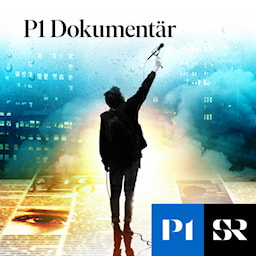
P1 Dokumentär
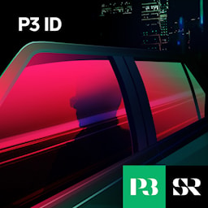
P3 ID
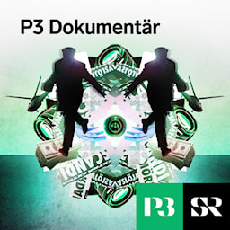
P3 dokumentär
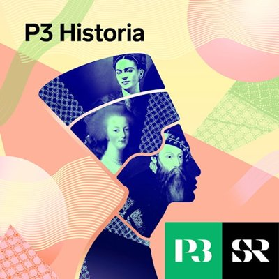
P3 Historia
Vetenskapsradion
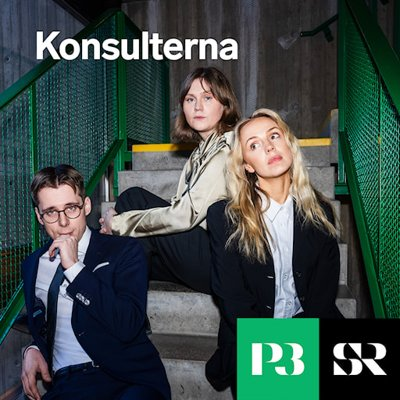
Konsulterna
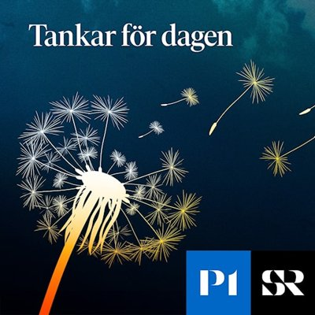
Tankar för dagen
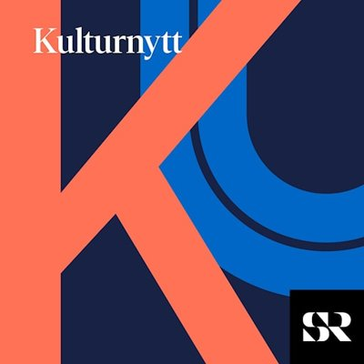
Kulturnytt
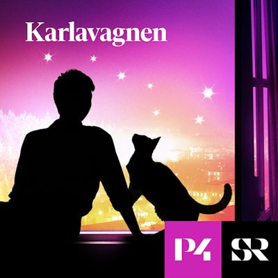
Karlavagnen
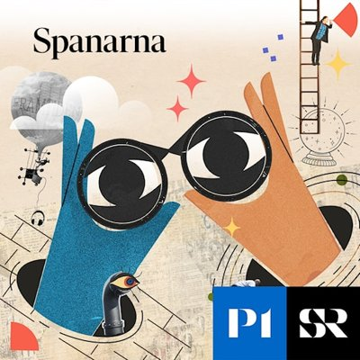
Spanarna
Eftersom du lyssnat på True Crime
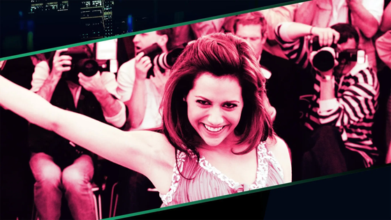
P3 ID
Brittany Murphy – Hollywoodsagan som blev true crime
Hon var skådespelerskan som charmade alla hon träffade. Men hennes liv kom att omges av rykten, och efter hennes död skulle det bli ännu fler.
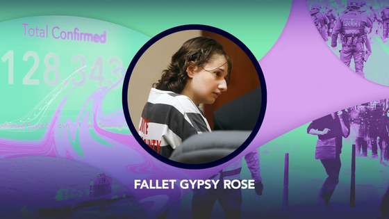
P3 NYHETER DOKUMENTÄR
Fallet Gypsy Rose – P3 Nyheter Dokumentär
När Dee Dee Blanchard mördas i juni 2015 misstänker polisen att hennes dotter Gypsy Rose ligger bakom mordet. Men det som börjar som en vanlig mordutredning ska snart komma att bli ett av världens mest kända fall av Münchhausen by proxy.
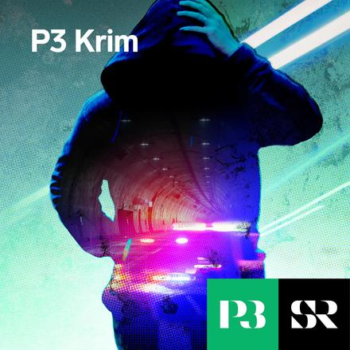
P3 Krim
Samhälle och kultur
Varje vecka ger Petra Berggren, Linus Lindahl och Jenny Hellström dig aktuella berättelser om brott och straff.
Avsnitt vi tror du kommer gilla
Monarkerna
Bonusprinsens dom


Tidigare idag föll domen mot bonusprinsen och straffet — 4 år i fängelse. Experten: Marius kan få speciell permis om Mette-Marit blir drottning
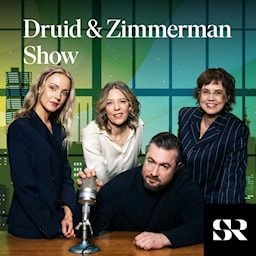
Andra som lyssnar på Druid & Zimmerman show lyssnar också på

Dagens Eko

USApodden

P3 Dokumentär
Spanarna
Lundströms Bokradio
Vetenskapsradion
Konsulterna
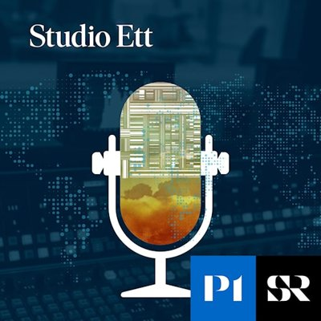
Studio Ett
Karlavagnen
P3 Historia
Tankar för dagen
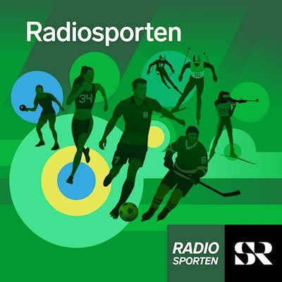
Radiosporten
Kulturnytt
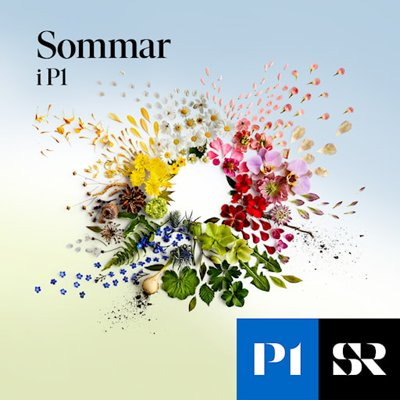
Sommar & Vinter i P1
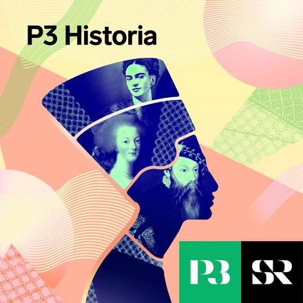
Senaste avsnitten från Historia
Baserat på din lyssning
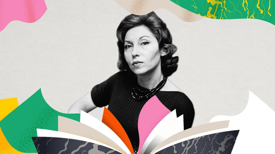
P3 KLASSIKERN
Stjärnans ögonblick – brasiliansk kultklassiker
Clarice Lispector, Brasiliens mest mytomspunna författare, skildrar en ung kvinnas ensamhet och längtan efter att bli sedd i en värld som inte vill ha henne.
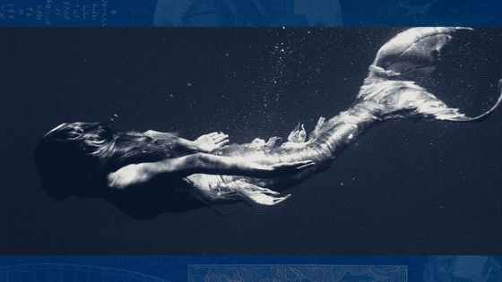
VETENSKAPSRADION HISTORIA
Uråldriga sjöjungfrur simmar igen
I SVT:s Svärtan, storfilmen Odysséen och på Sjöhistoriska museet dyker de upp. Vi dyker ner i djupen med dem, sjöjungfrurna och andra havsvidunder. I alla tider har vattnet och havsdjupen skrämt och fascinerat. Jättebläckfiskar, sjöormar, Näcken och sjöjungfrur har turats om att dra ner oss i djupen och Tobias Svanelid och Urban Björstadius träffar folklivsforskaren Tora Wall, aktuell med boken Havet, för att ta reda på hur länge vi…
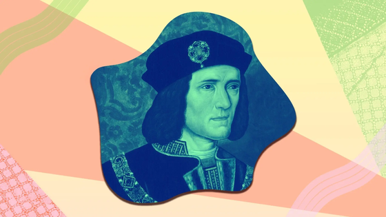
P3 HISTORIA
Nyköpings gästabud, del 1 – Generationer av brödrasvek
Del 1 av 3
En långdragen fejd där maktkamp, krig och intriger kulminerar i ett mordiskt kalas. Som i slutändan leder till undergången för en hel brödraskara.
Videoklipp för dig
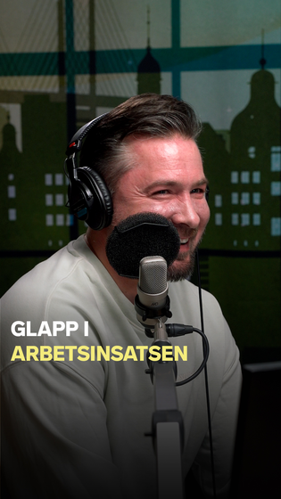
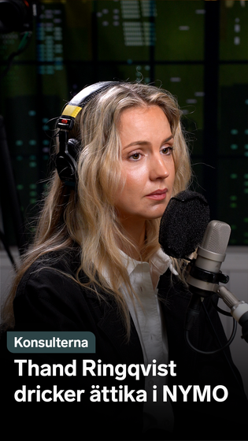
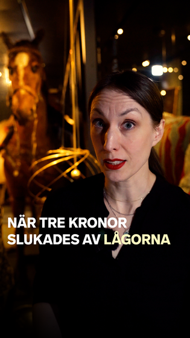
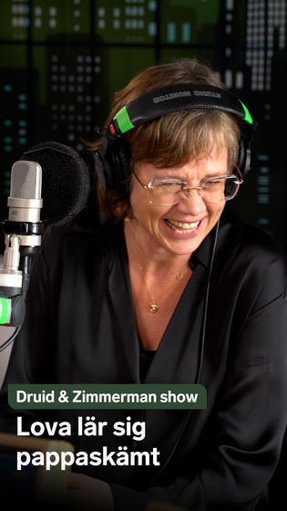
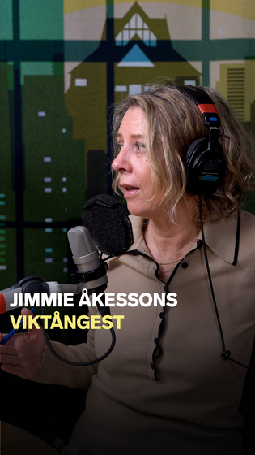
Mer med Cecilia Düringer
Baserat på din lyssning
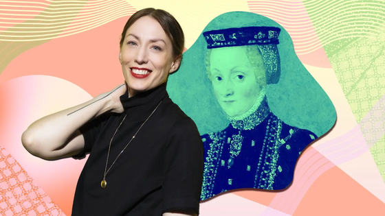
P3 historia
Cecilia rekommenderar: Katarina Jagellonica
Vi bläddrar i arkivet och tar fram avsnittet om den polska prinsessan som blev Sveriges drottning under en obegripligt stormig tid i svensk historia. Redaktionen för det här avsnittet består av:
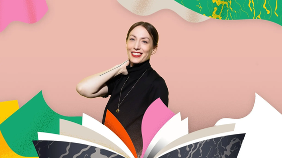
P3 KLASSIKERN
Boktips med Cecilia Düringer
Från 1600-talets häxbål till dionysiskt universitetsliv i amerikanskt 90-tal och en gudinnas äventyr under antiken. P3 Historias Cecilia Düringer tipsar om tre romaner med historiskt tema.
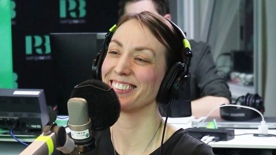
MORGONPASSET I P3 - GÄSTEN
Från gymnasielärare till vinnare av På spåret – Cecilia Düringer
Hon är rösten du känner igen från P3 Historia och historieläraren som vann På spåret. Cecilia Düringer gjorde slarvsylta av motståndet i På spåret tillsammans med Jonatan Unge och tog hem hela kalaset. Programledare: Kodjo Akolor, David Druid…
Utforska alla våra kategorier
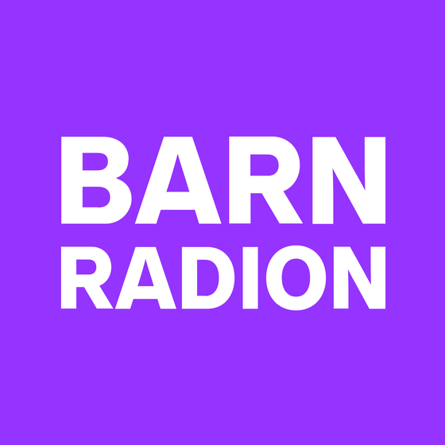
Historia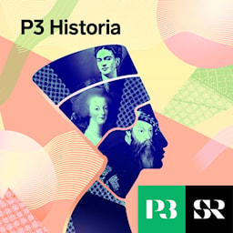
Samhälle och kultur Humor
Humor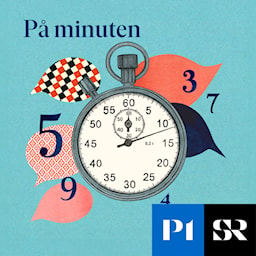
Drama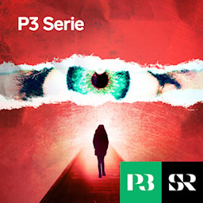
Nyheter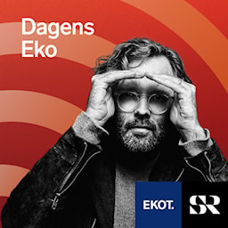
Nöje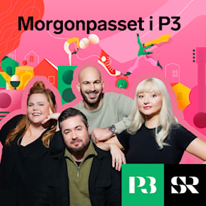
News in other languagesMiljö och vetenskap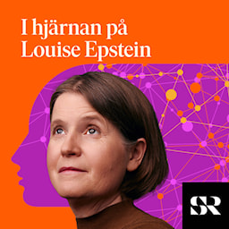
Dokumentär Hälsa och livsstil
Hälsa och livsstil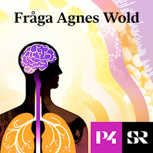
Musik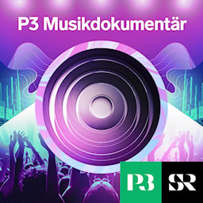
Livsåskådning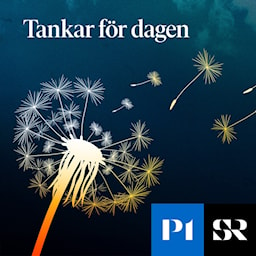
Miljö och vetenskap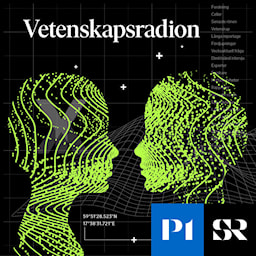
Ekonomi och teknik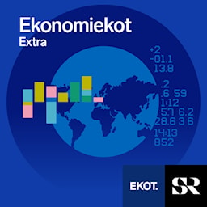
SportAlla poddar och program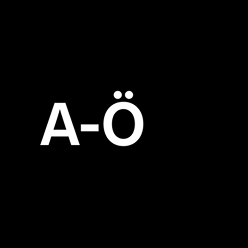
För dig som lyssnar på P1
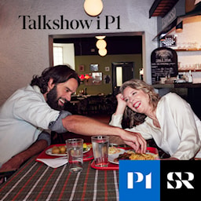
Talkshow i P1
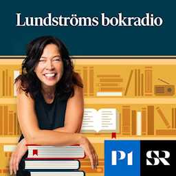
Lundströms Bokradio
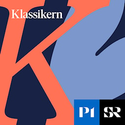
Lundströms Bokradio
Studio Ett
Vetenskapsradion
Tankar för dagen
Kulturnytt
Sommar & Vinter i P1
Författare från Sommar i P1
SOMMAR & VINTER I P1
Amanda Romare
Författaren om att plocka potatis, undvika döden och hitta sin plats på jorden.
SOMMAR & VINTER I P1
Jonas Bonnier
Författaren avslöjar en hemlighet han burit på i många år.
SOMMAR & VINTER I P1
Ebba Witt-Brattström
Författaren om att som barn erövra det nya landet Sverige och sudda ut krigens spår.
Klassisk förmiddag